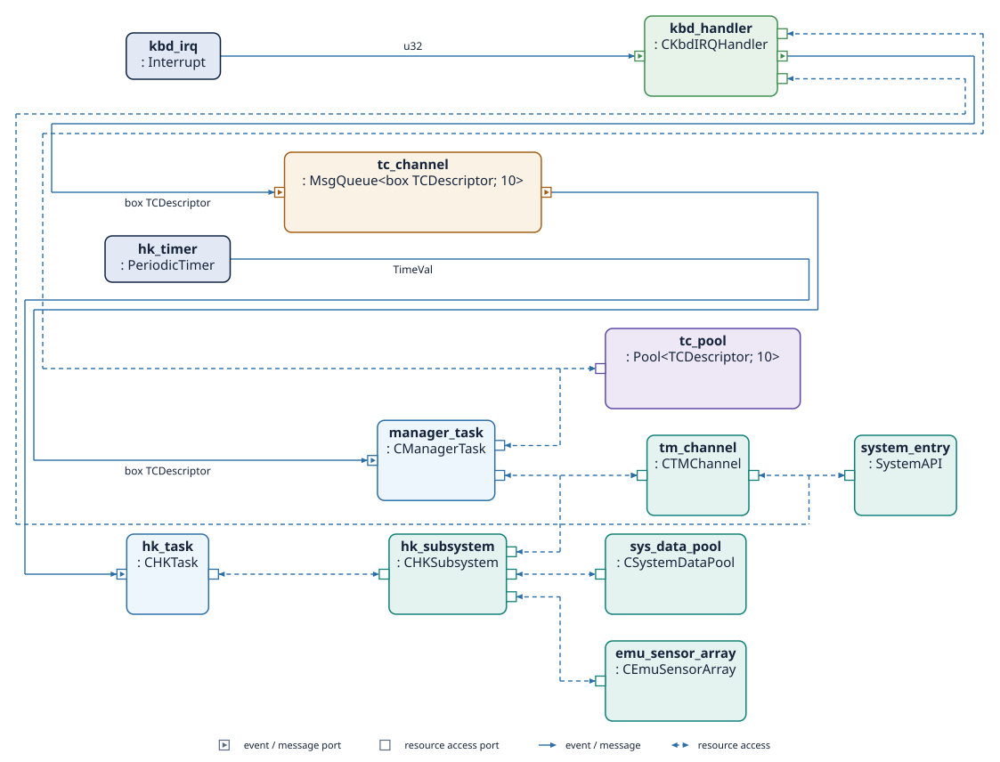

A Guided Tour¶
Introduction¶
This section presents a complete example of an application developed in Termina, illustrating the combined use of the language’s primary constructs: resources, tasks, emitters, handlers, message queues, and memory pools.
The goal is to implement a simplified version of the application software of a generic on-board satellite Instrument Control Unit (ICU). In this example, the software will perform two specific functions:
-
Housekeeping subsystem: The housekeeping subsystem is responsible for the periodic monitoring of the instrument’s internal state. It collects engineering parameters such as voltages, currents, and internal status flags, aggregates them into data packets, and makes them available for transmission to the spacecraft platform. In this tutorial, this functionality will be emulated by a housekeeping task that periodically gathers synthetic measurement data from a simulated sensing subsystem. Internally, this subsystem will rely on random number generation to produce representative values.
-
Telecommand reception and acceptance: In an actual spacecraft, telecommands are sent from the ground segment to control the instrument’s behavior. The on-board software receives these telecommands, validates them, and executes the corresponding actions. In our simplified scenario, telecommand reception will be simulated by user input from the standard input stream. The system will interpret each received character as a telecommand and respond with a corresponding telemetry acknowledgment message.
The Termina Execution Model¶
Before starting the implementation, this section describes the software execution environment on which Termina applications run. The core component of the Termina development toolchain is its transpiler, which translates Termina source code into C code that follows the MISRA C:2023 guidelines. The generated C code does not interact directly with the underlying real-time operating system (RTOS). Instead, it runs on top of the Termina Operating System Abstraction Layer (OSAL). The OSAL defines a uniform and well-specified application programming interface (API) that encapsulates the system services required by Termina applications, such as task scheduling, interrupt handling, synchronization, and inter-process communication.
Each supported operating system implements its own version of the OSAL, adapting this interface to the primitives of the target RTOS. Consequently, the transpiler generates the same C code for every platform, and only the OSAL implementation changes from one target to another.
In this tutorial, we will use the posix-gcc platform, a development and demonstration platform included with the Termina toolchain. It allows Termina applications to execute on conventional Unix-like systems such as Linux or macOS. The platform is intended primarily for prototyping and validation, rather than deployment on a real RTOS. Internally, the OSAL implementation for posix-gcc emulates real-time behavior using POSIX threads, timers, and synchronization primitives. Execution depends on the host system's scheduler, so the platform provides no hard real-time guarantees. The tasks, handlers, resources and their connections are the same as on a real-time target, and the platform is therefore suitable for functional testing.
The OSAL for this platform exposes a simple interface that emulates:
- an interrupt-like event triggered when there are characters available in the standard input stream buffer (
stdin), and - a telemetry output channel that sends messages to the standard output stream (
stdout).
These features allow us to simulate both telecommand reception and telemetry transmission:
- Telecommands will be represented by strings received through the standard input. Whenever characters are available to read, an input event is generated, triggering an interrupt handler that forwards the command to a task via a message queue.
- Telemetries will be represented by formatted text messages printed to the console by the housekeeping task, simulating the output of telemetry packets through a communication interface.
With this setup, Termina applications can be tested on the host without physical hardware or an embedded RTOS.
Application architecture overview¶
The architecture of the demo application built in this tutorial is shown in Figure 1.

The application defines two primary event emitters, which are the sources of activity within the system. The first emitter, called hk_timer, is a periodic timer that generates time-triggered events at regular intervals. This event emitter is connected to the hk_task. In Termina, a task is a reactive component that executes one or more actions in response to events or messages. Tasks may hold internal state variables and expose ports that connect them to other components, such as event sinks, message inputs, or access ports to shared resources. The hk_task specifically represents the instrument control software's housekeeping subsystem. With each event generated by the periodic timer, the task executes an action that emulates the process of collecting system data, aggregating it, and generating a telemetry message.
In a real on-board system, system data is stored in a centralized repository known as the system data pool. This component manages all engineering and status parameters that describe the platform or instrument's current state. Typical housekeeping data includes parameters such as voltages, currents, temperatures, operating modes, and internal status flags. These parameters are continuously updated by different subsystems and made available to components that require access to the system state, such as telemetry generators and health-monitoring functions.
In this application, the system data pool is represented as a resource called system_data_pool. Resources are passive components that encapsulate shared data and provide a set of procedures that tasks or handlers can invoke. Access to these resources is automatically synchronized by the runtime system when needed, ensuring mutual exclusion and preventing concurrent updates that could lead to inconsistent state information.
The system_data_pool resource in this application provides a procedure that returns a snapshot of the current system state. To model data collection from the system as it would occur in a real scenario, a second resource, sensor_array, has been defined. This resource emulates the behavior of a sensor system. The data obtained in this case is not from a real system but is instead generated synthetically using a random number generator integrated into the resource. Each time the housekeeping task requests new data, the data pool queries the sensor_array resource and returns simulated measurements that appear to be acquired from actual instrumentation. This abstraction allows the housekeeping logic to remain unchanged, regardless of whether the data originates from simulated or actual hardware.
After retrieving the data, the housekeeping task uses an additional resource named tm_channel to emulate telemetry transmission. This resource implements a set of procedures corresponding to different types of telemetry messages. When one of these procedures is invoked, the resource formats the message and uses a system call to print it to the standard output stream.
The second emitter, called kbd_irq, represents an asynchronous interrupt source that generates an event whenever new data becomes available in the standard input buffer. This emitter is connected to a handler, which is a lightweight reactive component that executes a single action immediately in response to an event, typically an interrupt. Handlers are intended for short, time-critical operations that must react promptly to external stimuli and delegate longer computations to other system components.
In this application, the handler is activated whenever the user enters a new character string on the console. The incoming character string represents a telecommand, which is a command received from the ground segment. The handler reads the character string using a system call and forwards it to another task named manager through a message queue called tc_channel. A message queue in Termina provides asynchronous communication between components. Queues are declared statically and have a bounded capacity.
The manager task emulates the main control logic of the instrument control unit. It defines an action that is automatically executed whenever a new message is received on the tc_channel message queue. This action inspects the received telecommand and determines whether to accept or reject it. In either case, the task uses the tm_channel resource to generate an acknowledgment message, which is printed to standard output, emulating the transmission of an acceptance or rejection packet.
Data transferred via the telecommand message queue is stored in dynamically allocated memory. Termina handles dynamic allocation deterministically via memory pools. A memory pool defines a fixed number of preallocated blocks that can be allocated and released at runtime without fragmentation or unpredictable latency. In this application, a pool named tc_pool manages the memory used to store incoming telecommands. When the handler receives a new command, it allocates a memory block from this pool and stores the input data in it. The block is then encapsulated in a message and sent to the manager task through the message queue. Once the task has processed the command, it releases the memory block back to the pool.
Creating the project¶
Before implementing the application, we must create a new Termina project that will hold all source files and configuration elements. In the Termina toolchain, a project defines the complete structure of an application, including its source code, build configuration, and target deployment platform. Projects are initialized through the command-line interface of the Termina environment.
A new project named icusw_demo is created by executing the following command from the terminal:
This command instructs the Termina toolchain to generate a new project skeleton with the standard directory layout and configuration files. Once the command has completed, a directory named icusw_demo/ will be created with the following contents:
The file termina.yaml is the project's configuration file. The command generates it with the project name, the build settings, and the target platform, which is posix-gcc by default:
The app directory contains the main module app.fin, which defines the application's top-level structure and connects all components. The src directory is reserved for additional modules that may define types, such as task or resource classes, or support functions. Finally, the output directory will store the generated C code produced by the transpiler.
Telecommand descriptors¶
The first step in implementing the application is to define a structured type that represents the telecommands received by the system. We will create a structure named TCDescriptor, which will store the contents of each received telecommand and allow it to be transferred between components of the application, such as the input handler and the manager task.
In Termina, structured types are defined using the struct keyword. A struct is a user-defined composite type that groups several related data fields. Each field has a name and a type, and all fields must be initialized before use.
We will declare this new type in a module called types.fin, located inside a new directory src/common/. This directory will hold elements shared across the application's modules.
The structure will be defined as follows:
Note
For some of the code blocks written in Termina throughout this tutorial, the corresponding C code generated by the transpiler is also provided in an adjacent tab. These examples show how each Termina construct is translated into C.
The structure defines two fields. The payload field is a fixed-length array containing up to 256 elements of type char, which will store the characters of the telecommand received through the standard input. Arrays in Termina always have a size known at compile time and cannot grow dynamically. The char type represents a single character and is suitable for textual data. The second field, size, is of type usize, the unsigned integer type used to represent counts, sizes, and array indices. It will store the number of valid characters currently contained in the payload array.
In our application, telecommands are simulated by entering strings through the standard input. When a telecommand is received, its contents will be copied into a TCDescriptor instance, and the size field will be updated to indicate how many characters were stored.
Telecommand acceptance¶
To determine whether a received telecommand is valid, we will implement a function named accept_tc(). In Termina, a function is a block of code that performs a computation and always terminates. Functions may take parameters and return values, but they cannot access global data directly. This restriction ensures that all information used by a function is passed explicitly, improving analyzability and preventing hidden side effects. Functions can receive parameters by value or by reference. An immutable reference (&T) lets the function read the referenced object, while a mutable reference (&mut T) also lets it modify that object.
In our case, the accept_tc() function will receive an immutable reference to a TCDescriptor object, meaning that the function can read the contents of the telecommand but cannot modify them. The function will return a value of type Status<u32>, one of Termina's built-in result types used to represent the outcome of an operation that may succeed or fail. The type argument u32 indicates that the error information carried by a Failure value will be represented as an unsigned 32-bit integer. A value of Success signals that the telecommand was accepted, while Failure(E) indicates an error with code E of type u32.
A telecommand is accepted if its text begins with the letter v. If the first character is e, the telecommand is considered incorrect and associated with error type 0. Any other initial character results in error type 1.
We will implement the function in a new module named accept.fin, located in the directory src/lib/. The file must begin by importing the common.types module, which contains the definition of the TCDescriptor structure.
#include "lib/accept.h"
Status__u32 accept_tc(const TCDescriptor * const tc) {
Status__u32 status = { ._variant = Status__Success };
if (tc->payload[0U] == 'e') {
status._variant = Status__Failure;
status.Failure._0 = 0U;
} else if (tc->payload[0U] != 'v') {
status._variant = Status__Failure;
status.Failure._0 = 1U;
} else {
}
return status;
}
The function evaluates the first letter of the payload field of the structure passed by reference and, depending on its value, updates the local variable status accordingly.
Emulating a sensor array¶
To simulate the behavior of a sensing subsystem, we will implement a resource that emulates the operation of a sensor array. In Termina, a resource is a passive component that encapsulates shared functionality and provides access to one or more interfaces consisting of procedures. Procedures are the operations that tasks and handlers can call on a resource, and the runtime guarantees that no two callers execute a procedure of the same resource at the same time.
In a real on-board system, a sensor array would be responsible for acquiring measurements such as voltages, currents, or temperatures from different hardware sensors. In our demonstration, however, the resource will generate synthetic readings using a pseudo-random number generator. Each generated number will represent the value that might have been read from a sensor channel.
Before defining the resource itself, we must declare the interface it provides, specifying the list of available procedures. We will then define the corresponding resource class, which contains the actual implementation of these procedures.
Both the interface and the resource class will be defined in a new module located at src/resources/sensor_array.fin. The contents of the file are as follows:
constexpr SENSOR_ARRAY_SIZE : usize = 10;
interface ISensorArray {
procedure get_sensor_value(&mut self, idx : usize,
value : &mut Option<u32>);
};
resource class CEmuSensorArray provides ISensorArray {
seed : u32;
method get_random_u32(&mut self) -> u32 {
var next : u32 = self->seed;
var rnd : u32;
next = next * 1103515245 : u32;
next = next + 12345 : u32;
rnd = (next / 65536 : u32) % 2048 : u32;
next = next * 1103515245 : u32;
next = next + 12345 : u32;
rnd = rnd << 10 : u32;
rnd = rnd ^ (next / 65536 : u32) % 1024 : u32;
next = next * 1103515245 : u32;
next = next + 12345 : u32;
rnd = rnd << 10 : u32;
rnd = rnd ^ (next / 65536 : u32) % 1024 : u32;
self->seed = next;
return rnd;
}
procedure get_sensor_value(&mut self, idx : usize,
value : &mut Option<u32>) {
*value = None;
if idx < SENSOR_ARRAY_SIZE {
*value = Some(self->get_random_u32());
}
return;
}
};
#include "resources/sensor_array.h"
static uint32_t CEmuSensorArray__get_random_u32(const termina__event_t * const termina__ev,
CEmuSensorArray * const self);
static uint32_t CEmuSensorArray__get_random_u32(const termina__event_t * const termina__ev,
CEmuSensorArray * const self) {
(void)termina__ev;
uint32_t next = self->seed;
uint32_t rnd;
next = next * 1103515245U;
next = next + 12345U;
rnd = (uint32_t)(next / 65536U) % 2048U;
next = next * 1103515245U;
next = next + 12345U;
rnd = rnd << 10U;
rnd = rnd ^ (uint32_t)((uint32_t)(next / 65536U) % 1024U);
next = next * 1103515245U;
next = next + 12345U;
rnd = rnd << 10U;
rnd = rnd ^ (uint32_t)((uint32_t)(next / 65536U) % 1024U);
self->seed = next;
return rnd;
}
void CEmuSensorArray__get_sensor_value(const termina__event_t * const termina__ev,
void * const termina__this,
const size_t idx,
Option__u32 * const value) {
CEmuSensorArray * self = (CEmuSensorArray *)termina__this;
termina__lock_t termina__lock = termina__resource__lock(&termina__ev->owner,
&self->_lock_type);
(*value)._variant = Option__None;
if (idx < 10U) {
(*value)._variant = Option__Some;
(*value).Some._0 = CEmuSensorArray__get_random_u32(termina__ev, self);
}
termina__resource__unlock(&termina__ev->owner, &self->_lock_type,
termina__lock);
return;
}
The module begins by declaring a constant expression, SENSOR_ARRAY_SIZE, which defines the number of simulated sensors in the array. The interface ISensorArray declares a single procedure, get_sensor_value(), which takes two arguments. The first argument, idx, indicates which sensor’s value to retrieve, with valid indices ranging from 0 to SENSOR_ARRAY_SIZE - 1. The second argument is a mutable reference to an object of type Option<u32>, where the sensor value will be stored if the index is valid.
The resource class CEmuSensorArray implements the ISensorArray interface. It defines a field named seed, which stores the internal state of the pseudo-random number generator. The class includes a private method, get_random_u32(), which uses a deterministic arithmetic algorithm to generate pseudo-random 32-bit integers. This sequence mimics random sensor readings while ensuring reproducibility across executions.
The get_sensor_value() procedure uses the provided index to determine whether a valid sensor exists. If the index falls within the valid range, the procedure writes a generated value into the variable referenced by value using the enumeration type Option<u32>. This type allows the procedure to indicate whether a valid result was produced (Some(value)) or not (None), enforcing explicit handling of possible absence of data by the caller.
Once the resource class has been defined, we can instantiate the resource itself in the main application file app/app.fin. The instantiation associates the resource with a concrete name (emu_sensor_array) and initializes its internal fields. The following code is added at the end of the file:
When defining a resource instance, each member field of the corresponding resource class must be given an initial value. In this case, the seed field is initialized to 0, providing a known starting point for the random number generator.
Defining the system data pool¶
The next step will be to define the resource that will implement the system data pool functionality. The system data pool resource models a central repository of housekeeping parameters that represent the current operational state of the system. In spacecraft and other embedded control applications, a system data pool is a shared data structure that stores engineering parameters such as voltages, currents, temperatures, or mode indicators. These parameters can be read by telemetry functions to report the system state or updated by control tasks when new measurements or status changes occur.
We will define both the interface and the resource class in a new file called src/resources/sys_data_pool.fin. The initial content of the file is as follows:
constexpr SDP_NUM_PARAMS : usize = 10;
interface ISystemDataPool {
procedure get_param(&mut self, idx : usize, value : &mut Option<u32>);
procedure set_param(&mut self, idx : usize, value : u32);
};
resource class CSystemDataPool provides ISystemDataPool {
param_values : [u32; SDP_NUM_PARAMS];
procedure get_param(&mut self, idx : usize, value : &mut Option<u32>) {
*value = None;
if idx < SDP_NUM_PARAMS {
*value = Some(self->param_values[idx]);
}
return;
}
procedure set_param(&mut self, idx : usize, value : u32) {
if idx < SDP_NUM_PARAMS {
self->param_values[idx] = value;
}
return;
}
};
#include "resources/sys_data_pool.h"
void CSystemDataPool__get_param(const termina__event_t * const termina__ev,
void * const termina__this, const size_t idx,
Option__u32 * const value) {
CSystemDataPool * self = (CSystemDataPool *)termina__this;
termina__lock_t termina__lock = termina__resource__lock(&termina__ev->owner,
&self->_lock_type);
(*value)._variant = Option__None;
if (idx < 10U) {
(*value)._variant = Option__Some;
(*value).Some._0 = self->param_values[idx];
}
termina__resource__unlock(&termina__ev->owner, &self->_lock_type,
termina__lock);
return;
}
void CSystemDataPool__set_param(const termina__event_t * const termina__ev,
void * const termina__this, const size_t idx,
const uint32_t value) {
CSystemDataPool * self = (CSystemDataPool *)termina__this;
termina__lock_t termina__lock = termina__resource__lock(&termina__ev->owner,
&self->_lock_type);
if (idx < 10U) {
self->param_values[idx] = value;
}
termina__resource__unlock(&termina__ev->owner, &self->_lock_type,
termina__lock);
return;
}
typedef struct {
termina__resource_lock_type_t _lock_type;
uint32_t param_values[10U];
} CSystemDataPool;
void CSystemDataPool__get_param(const termina__event_t * const termina__ev,
void * const termina__this, const size_t idx,
Option__u32 * const value);
void CSystemDataPool__set_param(const termina__event_t * const termina__ev,
void * const termina__this, const size_t idx,
const uint32_t value);
The code begins by defining a constant expression, SDP_NUM_PARAMS, which specifies the number of parameters stored in the pool. This value determines the fixed size of the array used to hold system data.
The interface ISystemDataPool defines the contract that any implementing class must follow. It declares two procedures: get_param(), which retrieves the value of a parameter given its index, and set_param(), which updates the value of a parameter.
Both procedures take an index of type usize that identifies the parameter to be accessed. In get_param(), the second argument is a mutable reference to an object of type Option<u32>. The use of an Option type ensures that the caller must explicitly handle the case where the requested parameter index is invalid. When the index is within bounds, the procedure assigns Some(value); otherwise, it leaves the result as None.
The resource class CSystemDataPool implements the ISystemDataPool interface and provides the concrete behavior of the data pool. It defines an internal array param_values, which contains SDP_NUM_PARAMS unsigned 32-bit integers. This array represents the current values of all system parameters.
The set_param() procedure updates the specified parameter value if the index is valid, while get_param() returns the stored value through the reference provided by the caller. An out-of-bounds index leaves the pool unchanged in set_param() and leaves the result as None in get_param().
The sys_data_pool resource is instantiated in app/app.fin, which must first import the module at the beginning of the file:
The resource instance is then appended at the end of the file:
The telemetry channel¶
The telemetry channel resource models the mechanism through which the application transmits housekeeping and diagnostic data to an external system. In actual on-board software, the telemetry subsystem is responsible for formatting and sending packets that report the spacecraft or instrument’s internal state. These packets are typically identified by a Service Type and Service Subtype as defined by the ECSS Packet Utilization Standard (PUS, ECSS-E-ST-70-41C).
In this simplified application, telemetry transmission is emulated by writing formatted text messages to the system console. This allows us to validate the application’s behavior without requiring dedicated hardware communication interfaces.
The telemetry resource is implemented in a new module, src/resources/tm_channel.fin:
import common.types;
constexpr hk_data_size : usize = 10;
interface ITMChannel {
procedure send_tm_3_25(&mut self, hk_data : &[u32; hk_data_size]);
procedure send_tm_1_1(&mut self);
procedure send_tm_1_2(&mut self, value : u32);
};
resource class CTMChannel provides ITMChannel {
system_port : access SystemAPI;
procedure send_tm_3_25(&mut self, hk_data : &[u32; hk_data_size]) {
// Handle TM(3,25) telemetry
let msg : [char; 32] = "Send TM(3,25): ";
let base : SysPrintBase = SysPrintBase::Decimal;
self->system_port.print(&msg);
for i : usize in 0 .. (hk_data_size - 1) {
self->system_port.print_u32(hk_data[i], base);
self->system_port.print_char(',');
self->system_port.print_char(' ');
}
self->system_port.println_u32(hk_data[hk_data_size - 1], base);
return;
}
procedure send_tm_1_1(&mut self) {
let msg : [char; 32] = "Send TM(1,1)";
self->system_port.println(&msg);
return;
}
procedure send_tm_1_2(&mut self, value : u32) {
let msg : [char; 32] = "Send TM(1,2) - Error code: ";
self->system_port.print(&msg);
let base : SysPrintBase = SysPrintBase::Decimal;
self->system_port.println_u32(value, base);
return;
}
};
#include "resources/tm_channel.h"
void CTMChannel__send_tm_1_1(const termina__event_t * const termina__ev,
void * const termina__this) {
CTMChannel * self = (CTMChannel *)termina__this;
termina__lock_t termina__lock = termina__resource__lock(&termina__ev->owner,
&self->_lock_type);
const char msg[32U] = { 'S', 'e', 'n', 'd', ' ', 'T', 'M', '(', '1',
',', '1', ')' };
self->system_port.println(termina__ev, msg);
termina__resource__unlock(&termina__ev->owner, &self->_lock_type,
termina__lock);
return;
}
void CTMChannel__send_tm_1_2(const termina__event_t * const termina__ev,
void * const termina__this, const uint32_t value) {
CTMChannel * self = (CTMChannel *)termina__this;
termina__lock_t termina__lock = termina__resource__lock(&termina__ev->owner,
&self->_lock_type);
const char msg[32U] = { 'S', 'e', 'n', 'd', ' ', 'T', 'M', '(', '1',
',', '2', ')', ' ', '-', ' ', 'E', 'r', 'r',
'o', 'r', ' ', 'c', 'o', 'd', 'e', ':', ' ' };
self->system_port.print(termina__ev, msg);
const SysPrintBase base = { ._variant = SysPrintBase__Decimal };
self->system_port.println_u32(termina__ev, value, base);
termina__resource__unlock(&termina__ev->owner, &self->_lock_type,
termina__lock);
return;
}
void CTMChannel__send_tm_3_25(const termina__event_t * const termina__ev,
void * const termina__this,
const uint32_t hk_data[10U]) {
CTMChannel * self = (CTMChannel *)termina__this;
termina__lock_t termina__lock = termina__resource__lock(&termina__ev->owner,
&self->_lock_type);
const char msg[32U] = { 'S', 'e', 'n', 'd', ' ', 'T', 'M', '(', '3',
',', '2', '5', ')', ':', ' ' };
const SysPrintBase base = { ._variant = SysPrintBase__Decimal };
self->system_port.print(termina__ev, msg);
for (size_t i = 0U; i < 9U; i = i + 1U) {
self->system_port.print_u32(termina__ev, hk_data[i], base);
self->system_port.print_char(termina__ev, ',');
self->system_port.print_char(termina__ev, ' ');
}
self->system_port.println_u32(termina__ev, hk_data[9U], base);
termina__resource__unlock(&termina__ev->owner, &self->_lock_type,
termina__lock);
return;
}
typedef struct {
termina__resource_lock_type_t _lock_type;
struct {
void (* print)(const termina__event_t * const termina__ev,
const char str[32U]);
void (* print_char)(const termina__event_t * const termina__ev,
const char value);
void (* print_u32)(const termina__event_t * const termina__ev,
const uint32_t value, const SysPrintBase base);
void (* println)(const termina__event_t * const termina__ev,
const char str[32U]);
void (* println_u32)(const termina__event_t * const termina__ev,
const uint32_t value, const SysPrintBase base);
} system_port;
} CTMChannel;
void CTMChannel__send_tm_1_1(const termina__event_t * const termina__ev,
void * const termina__this);
void CTMChannel__send_tm_1_2(const termina__event_t * const termina__ev,
void * const termina__this, const uint32_t value);
void CTMChannel__send_tm_3_25(const termina__event_t * const termina__ev,
void * const termina__this,
const uint32_t hk_data[10U]);
The module defines the interface ITMChannel, which specifies three procedures corresponding to the different telemetry messages that the system can send:
send_tm_3_25(): simulates the transmission of housekeeping telemetry packets. It receives a reference to the array that stores the parameter values. The size of the array is fixed by the constant expressionhk_data_size, declared at the top of the module, so the interface states exactly how many parameters a housekeeping report carries.send_tm_1_1(): represents a telecommand acceptance report, sent when a received telecommand is successfully validated.send_tm_1_2(): represents a telecommand rejection report, which includes an error code provided as a 32-bit unsigned integer argument.
The resource class CTMChannel implements this interface. It declares a single field, system_port, which is an access port to the SystemAPI interface provided by the underlying platform. Through this port, the resource can use low-level system procedures for input/output operations, such as printing strings or numbers to the console.
Each procedure uses these system calls to emulate the generation of telemetry packets. For example, send_tm_3_25() prints the label Send TM(3,25): followed by the list of housekeeping parameter values separated by commas. Similarly, send_tm_1_1() prints a short acknowledgment message, while send_tm_1_2() outputs an error message followed by the corresponding numerical error code.
Because telemetry transmission is encapsulated in a resource, the housekeeping and manager code only call the ITMChannel procedures. In a real deployment, the same interface could be implemented using an actual communication driver instead of the console-based emulation.
To enable the use of system calls within Termina applications, the runtime must provide an internal resource named system_entry. Its procedures call the platform services implemented by the OSAL, which include low-level functions such as console input/output, timing services, and other system-dependent primitives used by higher-level components like the telemetry channel.
The system_entry resource is not instantiated by default. Its deployment is controlled by a global configuration parameter in the project’s termina.yaml file. To enable it, the following lines must be added to the configuration file located at the root of the project:
When this option is set, the Termina runtime automatically instantiates and exposes the system_entry resource during system initialization. Console output and input operate over fixed-size buffers: print and println take a reference to a [char; N] array, where N is the sys-print-output-buffer-size value, and read fills a [char; M] array whose size is sys-read-input-buffer-size. Both default to 256 bytes. The telemetry messages here are short, so the output buffer is reduced to 32 in the configuration above, while the input buffer keeps its default of 256 for the telecommand payload. The message buffers are therefore declared as [char; 32]; shorter strings are padded with '\0' and printed up to the first null. Once this feature has been enabled, the telemetry channel resource (tm_channel) can be deployed and connected to the system interface.
To do this, the telemetry channel module is first imported in the main application file app/app.fin:
The resource is then instantiated and connected to system_entry at the end of the same file:
This declaration creates an instance of the tm_channel resource and links its system_port access port to the system_entry resource.
Doing the housekeeping¶
In on-board control software, the housekeeping function periodically collects engineering and diagnostic parameters from the system, stores them in a structured form, and transmits them as telemetry packets, from which the ground segment monitors the instrument’s status.
In our application, the housekeeping function is divided into two complementary components:
- the housekeeping subsystem, a passive resource, which encapsulates the logic for data acquisition and telemetry generation, and
- the housekeeping task, which invokes the resource at regular intervals according to a periodic schedule.
The housekeeping subsystem¶
The housekeeping subsystem is modeled as a passive resource that encapsulates the logic required to collect and publish housekeeping data. The procedures provided by this resource will be called by a specialized housekeeping task to update parameters and generate telemetry at regular intervals.
The housekeeping subsystem coordinates three main components: the sensor array, which provides synthetic sensor readings; the system data pool, which stores and manages the current system parameters; and the telemetry channel, which transmits housekeeping reports.
The resource is implemented in a new module, src/resources/hk_subsystem.fin:
import resources.tm_channel;
import resources.sensor_array;
import resources.sys_data_pool;
interface IHKSubsystem {
procedure update_params(&mut self);
procedure do_housekeeping(&mut self);
};
resource class CHKSubsystem provides IHKSubsystem {
interval : u32;
interval_control : u32;
sys_data_pool_port : access ISystemDataPool;
sensor_array_port : access ISensorArray;
tm_channel_port : access ITMChannel;
procedure update_params(&mut self) {
var opt_value : Option<u32> = None;
for i : usize in 0 .. SENSOR_ARRAY_SIZE {
self->sensor_array_port.get_sensor_value(i, &mut opt_value);
match opt_value {
case Some(v) => {
self->sys_data_pool_port.set_param(i, v);
}
case None => {
}
}
}
return;
}
procedure do_housekeeping(&mut self) {
self->interval_control = self->interval_control + 1;
if self->interval_control == self->interval {
self->interval_control = 0;
var hk_data : [u32; SDP_NUM_PARAMS] = [0; SDP_NUM_PARAMS];
var opt_value : Option<u32> = None;
for i : usize in 0 .. SDP_NUM_PARAMS {
self->sys_data_pool_port.get_param(i, &mut opt_value);
match opt_value {
case Some(v) => {
hk_data[i] = v;
}
case None => {
}
}
}
self->tm_channel_port.send_tm_3_25(&hk_data);
}
return;
}
};
#include "resources/hk_subsystem.h"
void CHKSubsystem__do_housekeeping(const termina__event_t * const termina__ev,
void * const termina__this) {
CHKSubsystem * self = (CHKSubsystem *)termina__this;
termina__lock_t termina__lock = termina__resource__lock(&termina__ev->owner,
&self->_lock_type);
self->interval_control = self->interval_control + 1U;
if (self->interval_control == self->interval) {
self->interval_control = 0U;
uint32_t hk_data[10U] = { 0U, 0U, 0U, 0U, 0U, 0U, 0U, 0U, 0U, 0U };
Option__u32 opt_value = { ._variant = Option__None };
for (size_t i = 0U; i < 10U; i = i + 1U) {
self->sys_data_pool_port.get_param(termina__ev,
self->sys_data_pool_port._that,
i, &opt_value);
if (opt_value._variant == Option__Some) {
const uint32_t v = opt_value.Some._0;
hk_data[i] = v;
} else {
}
}
self->tm_channel_port.send_tm_3_25(termina__ev,
self->tm_channel_port._that,
hk_data);
}
termina__resource__unlock(&termina__ev->owner, &self->_lock_type,
termina__lock);
return;
}
void CHKSubsystem__update_params(const termina__event_t * const termina__ev,
void * const termina__this) {
CHKSubsystem * self = (CHKSubsystem *)termina__this;
termina__lock_t termina__lock = termina__resource__lock(&termina__ev->owner,
&self->_lock_type);
Option__u32 opt_value = { ._variant = Option__None };
for (size_t i = 0U; i < 10U; i = i + 1U) {
self->sensor_array_port.get_sensor_value(termina__ev,
self->sensor_array_port._that,
i, &opt_value);
if (opt_value._variant == Option__Some) {
const uint32_t v = opt_value.Some._0;
self->sys_data_pool_port.set_param(termina__ev,
self->sys_data_pool_port._that,
i, v);
} else {
}
}
termina__resource__unlock(&termina__ev->owner, &self->_lock_type,
termina__lock);
return;
}
typedef struct {
termina__resource_lock_type_t _lock_type;
struct {
void * _that;
void (* send_tm_3_25)(const termina__event_t * const termina__ev,
void * const termina__this,
const uint32_t hk_data[10U]);
} tm_channel_port;
struct {
void * _that;
void (* get_sensor_value)(const termina__event_t * const termina__ev,
void * const termina__this, const size_t idx,
Option__u32 * const value);
} sensor_array_port;
struct {
void * _that;
void (* get_param)(const termina__event_t * const termina__ev,
void * const termina__this, const size_t idx,
Option__u32 * const value);
void (* set_param)(const termina__event_t * const termina__ev,
void * const termina__this, const size_t idx,
const uint32_t value);
} sys_data_pool_port;
uint32_t interval_control;
uint32_t interval;
} CHKSubsystem;
void CHKSubsystem__do_housekeeping(const termina__event_t * const termina__ev,
void * const termina__this);
void CHKSubsystem__update_params(const termina__event_t * const termina__ev,
void * const termina__this);
The interface IHKSubsystem defines two procedures. The first, update_params(), is responsible for refreshing the system data pool with the most recent readings from the sensor array. The second, do_housekeeping(), implements the periodic housekeeping logic that aggregates the data and sends a telemetry report when the defined interval is reached.
The resource class CHKSubsystem provides this interface and maintains the necessary state for interval management. The fields interval and interval_control determine the execution cadence of the housekeeping operation: the active task that owns this subsystem will call do_housekeeping() periodically, and the procedure itself will decide when it is time to emit telemetry based on these counters.
The access ports sys_data_pool_port, sensor_array_port, and tm_channel_port connect the subsystem to the system data pool, sensor array, and telemetry channel resources, respectively. All interactions with other components occur through these interfaces.
The update_params() procedure iterates over all simulated sensors, requesting each reading from the sensor array and updating the corresponding entry in the system data pool. The use of the Option<u32> type forces explicit handling of the case where a sensor value may not be available.
The do_housekeeping() procedure increments the control counter and, once the configured interval is reached, resets the counter and performs a complete data acquisition cycle. It retrieves all parameters from the system data pool, stores them in a fixed-size local array hk_data, and sends them to the telemetry channel using the send_tm_3_25() procedure. Both the number of parameters and the size of the array are known at compile time, which guarantees bounded execution and predictable memory usage.
Once the resource class has been defined, an instance of the housekeeping subsystem must be created in the main application file app/app.fin. At the beginning of the file, we must import the module:
The following lines are then added at the end of the same file:
This declaration instantiates the hk_subsystem resource with an update interval of five cycles and connects its access ports to the corresponding system components. The subsystem retrieves data from the emu_sensor_array, stores the values in the sys_data_pool, and sends telemetry through the tm_channel. The initialization of interval_control to zero ensures that the first telemetry packet will be generated after the configured number of cycles.
The housekeeping task¶
The housekeeping task is the active component responsible for executing the housekeeping subsystem at regular time intervals. In Termina, a task is an active entity that reacts to events or incoming messages by executing actions. An action runs to completion before its task takes the next event, although a task of higher priority may preempt it in the meantime. Tasks interact with other system components through ports, for example access ports to shared resources or event sinks that receive activation events.
The housekeeping task encapsulates the logic that periodically triggers the housekeeping subsystem resource. It does not perform data collection or telemetry generation directly; instead, it calls the procedures provided by the passive CHKSubsystem resource.
The task will be defined in the file src/tasks/housekeeping.fin:
import resources.hk_subsystem;
task class CHKTask {
hk_subsystem_port : access IHKSubsystem;
timer : sink TimeVal triggers hk_timeout;
action hk_timeout(&priv self, _current_time : TimeVal) -> Status<i32> {
let status : Status<i32> = Success;
self->hk_subsystem_port.update_params();
self->hk_subsystem_port.do_housekeeping();
return status;
}
};
The class CHKTask defines a task type that interacts with the housekeeping subsystem through the access port hk_subsystem_port, which provides access to the IHKSubsystem interface. This port connects the task to the corresponding instance of the CHKSubsystem resource declared in the main application.
The field timer is an event sink that receives periodic events from a timer emitter. The declaration sink TimeVal triggers hk_timeout specifies that the task defines an action named hk_timeout, which will be automatically executed whenever the event associated with the timer is received. The parameter _current_time of type TimeVal represents the timestamp of the triggering event, although it is not used in this example.
The action hk_timeout() constitutes the main logic of the task. When triggered, it calls the update_params() and do_housekeeping() procedures on the connected housekeeping subsystem. The first procedure updates the system data pool with the latest sensor readings, while the second determines whether it is time to send a housekeeping telemetry packet based on the configured interval.
The action returns a value of type Status<i32>, which indicates whether it completed successfully or encountered an error. In this example, it always returns Success.
Once the CHKTask class has been defined in src/tasks/housekeeping.fin, the housekeeping task must be instantiated in the main module app/app.fin. The task module is first imported at the top of the file:
The emitter and task instances are then added at the end of the file:
The periodic timer emitter hk_timer provides the time base that triggers the housekeeping process. It defines an internal field period, which specifies the emission interval using two components: tv_sec and tv_usec for the number of seconds and microseconds, respectively, between consecutive events. In this configuration, the timer generates an event every one second, emulating the periodic activation typical of housekeeping functions in real on-board control systems.
The housekeeping task instance hk_task is declared using the CHKTask class. The annotation #[priority(20)] assigns it a fixed scheduling priority of 20. Priorities are fixed at compile time, and the scheduler uses them to decide which ready task preempts another; a lower number means a higher priority.
The task defines two connections. The first binds the task’s access port to the passive housekeeping subsystem resource, allowing the task to invoke its procedures. Through this port, the task calls update_params() and do_housekeeping() on each activation, delegating all data handling and telemetry logic to the subsystem. The second connection links the task’s event sink timer to the periodic emitter hk_timer. On each timer event, which occurs once per second, the runtime executes the task’s hk_timeout action.
Reading and accepting telecommands¶
In this final part of the tutorial, we will implement the components responsible for telecommand reception and processing. These include the manager task, which validates received telecommands and issues acknowledgment messages, and the event handler associated with the keyboard interrupt that emulates telecommand input. Additionally, we will define the elements required for dynamic memory management and for the communication between the handler and the manager task.
The manager task¶
The manager task acts as the main control process of the application. It is responsible for receiving telecommands from the handler, validating them, and sending the corresponding telemetry reports to acknowledge or reject them. Like all tasks in Termina, it operates reactively: it remains dormant until it receives an event (in this case, a message through a message queue) and then executes its action.
The task is defined in the file src/tasks/manager.fin, whose contents are as follows:
import resources.tm_channel;
import common.types;
import lib.accept;
task class CManagerTask {
tm_channel_port : access ITMChannel;
tc_pool_port : access Allocator<TCDescriptor>;
in_tc_channel : in box TCDescriptor triggers process_tc;
action process_tc(&priv self, tc : box TCDescriptor) -> Status<i32> {
let status : Status<i32> = Success;
// Process incoming telecommands here
var tc_accept : Status<u32> = accept_tc(&tc);
match tc_accept {
case Failure(code) => {
// Telecommand not accepted, send error TM
self->tm_channel_port.send_tm_1_2(code);
}
case Success => {
// Telecommand accepted, proceed
self->tm_channel_port.send_tm_1_1();
}
}
self->tc_pool_port.free(tc);
return status;
}
};
The CManagerTask class defines three connection ports that link the task to other parts of the system:
tm_channel_portis an access port to the telemetry channel resource, used to send acceptance or error reports after processing each telecommand.tc_pool_portis an access port to the memory pool responsible for managing dynamic memory allocations used to store received telecommands.in_tc_channelis an input message port, declared asin box TCDescriptor, through which the task receives messages containing telecommands encapsulated in dynamically allocated memory blocks. Thetriggers process_tcclause specifies that the actionprocess_tc()will be executed each time a new message arrives on this port.
When a telecommand message is received, the runtime passes ownership of the box TCDescriptor object to the action process_tc(). The task invokes the accept_tc() function, previously defined in the lib.accept module, to determine whether the telecommand is valid. The function returns a Status<u32> value: Success if the telecommand is accepted, or Failure(code) if it is rejected, with an error code of type u32.
A match statement is used to handle the two possible cases explicitly:
- If the result is
Failure(code), the task callssend_tm_1_2(code)on the telemetry channel to send a telecommand rejection report with the corresponding error code. - If the result is
Success, the task callssend_tm_1_1()to send a telecommand acceptance report.
Once processing is complete, the task releases the telecommand object by calling self->tc_pool_port.free(tc). This operation returns the memory block to tc_pool, where it becomes available to the next allocation.
The action then returns a Status<i32> value indicating the success of its execution. In this example, it always returns Success.
The keyboard interrupt handler¶
The keyboard interrupt handler is a reactive component that runs whenever input data become available from the standard input stream. In Termina, a handler is an active entity executed immediately in response to an external event, typically an interrupt. Handlers are designed for short, time-critical actions that must execute quickly and deterministically before returning control to the system scheduler.
This handler is responsible for simulating the reception of a telecommand through a keyboard interrupt. When triggered, it reads input characters from the console, stores them in a newly allocated telecommand descriptor, and forwards the descriptor to the manager task through a message queue.
The handler is defined in a new module located at src/handlers/kbdhandler.fin, whose complete implementation is shown below:
import common.types;
handler class CKbdIRQHandler {
system_port : access SystemAPI;
tc_pool_port : access Allocator<TCDescriptor>;
in_kbd_irq : sink u32 triggers receive_tc;
tc_channel_out : out box TCDescriptor;
action receive_tc(&priv self, _vector : u32) -> Status<i32> {
var status : Status<i32> = Success;
var opt_tc_desc : Option<box TCDescriptor> = None;
self->tc_pool_port.alloc(&mut opt_tc_desc);
match opt_tc_desc {
case Some(tc_desc) => {
self->system_port.read(&mut tc_desc.payload, &mut tc_desc.size);
if tc_desc.size > 0 {
self->tc_channel_out.send(tc_desc);
} else {
self->tc_pool_port.free(tc_desc);
}
}
case None => {
status = Failure(-1);
}
}
return status;
}
};
The CKbdIRQHandler class defines four ports that connect it to other system components:
system_portis an access port to theSystemAPIinterface provided by the runtime. It allows the handler to perform system-level operations, such as reading input from the standard input buffer.tc_pool_portis an access port to the memory pool that manages the dynamic allocation of telecommand descriptors.in_kbd_irqis an event sink that receives interrupts whenever data become available in the standard input buffer. Each interrupt triggers thereceive_tc()action.tc_channel_outis an output message port used to send the telecommand descriptor to the manager task via a message queue.
The action receive_tc() implements the logic executed upon each interrupt. It first attempts to allocate a new telecommand descriptor from the memory pool. The allocation result is stored in an Option<box TCDescriptor>, which enforces explicit handling of success or failure cases:
- If the allocation succeeds (
Some(tc_desc)), the handler reads up to 256 characters from the system input into the descriptor’spayloadfield and stores the number of valid characters insize. Then:- If at least one character has been read, the descriptor is sent through
tc_channel_outto the manager task. - If no characters have been read, the descriptor is released back to the pool using
free().
- If at least one character has been read, the descriptor is sent through
- If the allocation fails (
None), the action sets the status toFailure(-1).
Finally, the action returns a Status<i32> value, which is Success unless the allocation fails.
Deploying the remaining components¶
Once the keyboard interrupt handler has been implemented, the last step is to instantiate the remaining system elements that complete the application’s architecture.
The event corresponding to the keyboard interrupt is generated by a runtime-provided emitter. As with the system call interface, this emitter is not deployed automatically. To enable it, a configuration parameter must be added to the project’s termina.yaml file. Specifically, the following lines must be included at the end of the configuration file:
This directive instructs the runtime to deploy the kbd_irq emitter, which generates an event if there are characters stored in the standard input buffer. This emitter will act as the trigger for the keyboard interrupt handler, allowing the system to simulate telecommand reception.
With the emitter available, we can now deploy the remaining elements required to complete the communication path between the handler and the manager task:
- The telecommand descriptor pool (
tc_pool), which manages the dynamic allocation ofTCDescriptorobjects used to store incoming telecommands. The pool will contain 10 preallocated elements. - The message queue (
tc_channel), which provides the communication channel between the handler and the manager task. It also has a capacity of 10 elements, ensuring bounded buffering of telecommands. - The keyboard interrupt handler (
kbd_handler), which listens for keyboard events, reads input from the console, and forwards telecommands to the manager task through the message queue. - The manager task (
manager_task), which processes received telecommands, validates them, and issues the appropriate telemetry acknowledgment.
All of these elements are instantiated in the main application module app/app.fin. Before doing so, we must include the following imports at the beginning of the file:
Once the modules have been imported, we can now add the remaining elements at the end of the file:
resource tc_pool : Pool<TCDescriptor; 10>;
channel tc_channel : MsgQueue<box TCDescriptor; 10>;
handler kbd_handler : CKbdIRQHandler = {
system_port <-> system_entry,
in_kbd_irq <- kbd_irq,
tc_pool_port <-> tc_pool,
tc_channel_out -> tc_channel
};
#[priority(10)]
task manager_task : CManagerTask = {
tm_channel_port <-> tm_channel,
tc_pool_port <-> tc_pool,
in_tc_channel <- tc_channel
};
The handler and the manager task, which is instantiated with a priority of 10, connect their ports as follows:
- The keyboard interrupt handler
kbd_handler:system_portconnects tosystem_entry, giving the handler access to system calls for reading input data.in_kbd_irqis connected to thekbd_irqemitter, which triggers the interrupt events generated by the runtime.tc_pool_portlinks to the memory pool for descriptor allocation and deallocation.tc_channel_outis connected to the telecommand message queue, enabling communication with the manager task.
- The manager task
manager_task:tm_channel_portlinks to the telemetry channel resource for sending acknowledgment packets.tc_pool_portlinks to the memory pool, allowing it to free processed telecommand descriptors.in_tc_channelconnects to the telecommand message queue to receive incoming messages from the handler.
Building and Running the Application¶
With all the modules and configuration files in place, the project is now ready to be built and executed. The application is built in two steps: the transpiler generates the C code, and the platform's build system compiles it into an executable for the posix-gcc platform.
Project structure¶
Before building, the project directory should have the following structure:
icusw_demo/
├── termina.yaml
├── app/
│ └── app.fin
├── src/
│ ├── common/
│ │ └── types.fin
│ ├── lib/
│ │ └── accept.fin
│ ├── handlers/
│ │ └── kbdhandler.fin
│ ├── resources/
│ │ ├── hk_subsystem.fin
│ │ ├── sensor_array.fin
│ │ ├── sys_data_pool.fin
│ │ └── tm_channel.fin
│ └── tasks/
│ ├── housekeeping.fin
│ └── manager.fin
└── output/
Building the project¶
Once the directory structure is complete, we must open a terminal in the project’s root directory (icusw_demo/) and execute the Termina build command:
The termina build command invokes the Termina transpiler, which translates all .fin source modules into C code. During this process, it validates the program structure, checks type safety, verifies all port connections, and generates the necessary runtime configuration for the selected platform. The resulting C files are placed automatically in the output/ directory.
Once the transpilation process completes successfully, the generated C code is compiled using the standard build system provided with the posix-gcc platform, by entering the following commands:
This command sequence invokes the GCC compiler with the build rules generated by the transpiler. After a successful compilation, a new executable binary will be created in the bin/ directory:
Running the application¶
The demo is run by executing the binary from the console:
Once launched, the program initializes the runtime and deploys all defined resources, tasks, and handlers. The application can now be driven directly from the terminal:
- Each string typed in the console and followed by Enter simulates the reception of a telecommand.
- If the telecommand starts with the letter
v, it will be accepted, and the system will print a message corresponding to TM(1,1). - If it starts with
e, it will be rejected with error code 0, producing TM(1,2). - Any other string will be rejected with error code 1.
- If the telecommand starts with the letter
- In parallel, the housekeeping task executes once per second, invoking the housekeeping subsystem, which refreshes the system data pool on every activation and, since its interval is 5, emits a housekeeping telemetry packet every five seconds. Output messages similar to the following will appear:
Send TM(3,25): 1939973050, 1222863988, 1351162014, 1328756915, 1352917968, 2111677371, 1334411258, 575130578, 1606705543, 1606250631
Each line corresponds to a housekeeping telemetry report containing the ten simulated sensor readings currently stored in the system data pool.